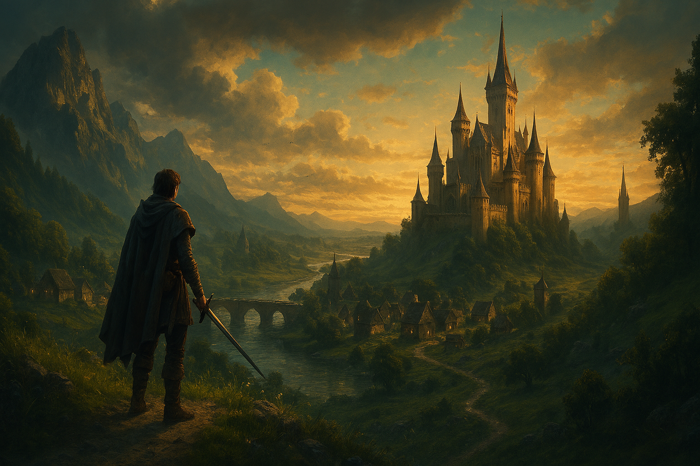

A Lenda de Edrasil
O que aconteceu com a imensa cidade que não está mais nos mapas?
Vasculhe
Independente de onde você partiu, sempre acabará convergindo para o inevitável eixo que é sussurrado entre os antigos, ou espalhado como um mero boato em tavernas. Encontre o seu caminho e se torne mais um integrante do hall das lendas (Que o mestre do jogo com certeza utilizará em outras campanhas).
O que aconteceu com a imensa cidade que não está mais nos mapas?
VasculheSe nem os elfos confirmam então deve ser só um conto... Certo?
Quero ler esse contoEles operam nas sombras. São manipuladores deliberados ou colaboram com algo maior.
O que se sabe